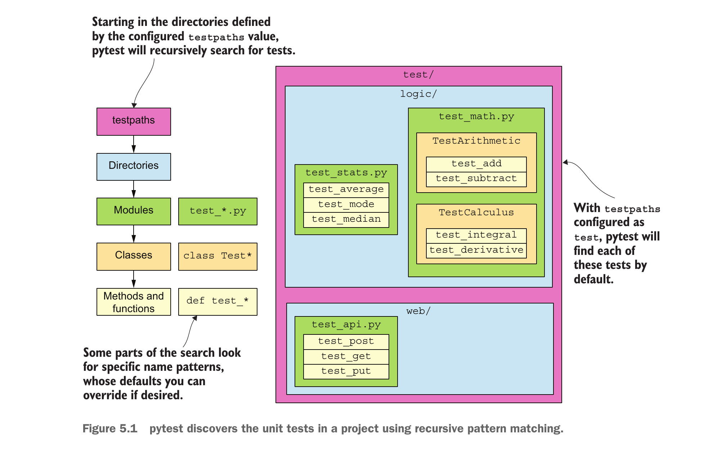
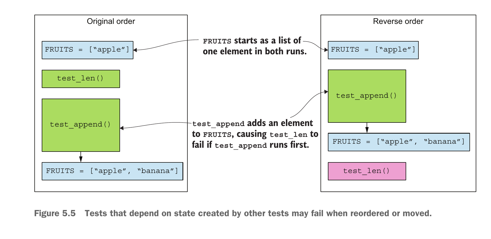
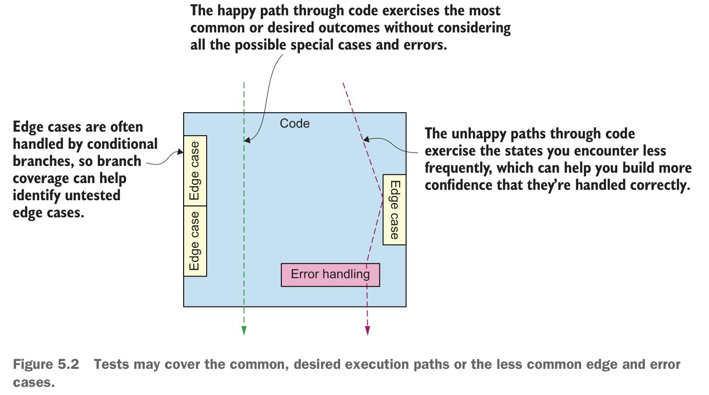

인사 함수의 자동 검사
- 이름을 넣으면 인사말을 반환하는 함수를 검사한다. 입력·기대값을 코드로 적고 pytest로 실행한다.
- 소스 수정 반영, 테스트 발견, 실패 보고서를 확인한다.
01
02
greet의 계약은 정확한 문자열 반환이다.name: str·-> str는 형식 표기다. f"...{name}..."의 중괄호에 이름이 들어간다.def greet(name: str) -> str:
return f"Hello, {name}!"greet("Hee") → "Hello, Hee!"
greet("world") → "Hello, world!"hello-greet는 터미널 명령이고 main()은 인수를 읽어 출력과 정상 종료 값 0을 만드는 함수다.main 직접 호출은 인수→출력 연결을 검사한다. 설치된 실행 파일의 생성과 여러 Python 버전 호환성은 별도 검사다.| 입력 | main의 기대 결과 |
|---|---|
| 이름 Hee | Hello, Hee! 출력 / 0 반환 |
| 인수 없음 | Hello, world! 출력 / 0 반환 |
03
sys.argv의 0번은 명령 이름, 1번부터 사용자 입력이다.import sys는 인수 목록을, from ... import greet는 인사 함수를 가져온다. 이름이 없으면 world를 선택한다.print는 문자열 뒤에 줄바꿈을 출력한다. return 0은 정상 종료 값이며 -> int는 정수 반환 표기다.import sys
from hello_open_source.greeting import greet
def main() -> int:
if len(sys.argv) > 1:
name = sys.argv[1]
else:
name = "world"
print(greet(name))
return 0
04
pytest는 테스트를 찾아 실행·보고하는 도구다. 한 테스트는 입력·기대값·비교를 묶고, 스위트는 여러 테스트의 집합이다.from ... import greet는 공개 함수를 가져온다. "Hee"를 준비해 호출하고 결과를 actual에 담는다.assert는 비교가 참이면 통과, 거짓이면 실패다. test_는 발견 규칙, -> None은 반환값이 없다는 형식 표기다.from hello_open_source.greeting import greet
def test_greet_with_name() -> None:
actual = greet("Hee")
assert actual == "Hello, Hee!"
실제 "Hello, Hee!" == 기대 "Hello, Hee!" → 통과
문자열이라는 사실만 검사하면 "BROKEN"도 통과할 수 있다.05
hello-open-source/에서 가상환경을 활성화한다. .은 이 폴더, -e는 이 폴더의 소스를 import할 수 있게 설치하는 옵션이다.python -c는 따옴표 안 Python 코드를 새 프로세스에서 실행한다.python -m pip install -e .
python -m pip install pytest pytest-covpython -c "from hello_open_source.greeting import greet; print(greet('Hee'))"Hello, Hee!src/hello_open_source/greeting.py의 반환문을 아래처럼 바꾸고 저장한다.python -c 명령을 다시 실행하면 재설치 없이 바뀐 문자열이 나온다. 확인 후 Hello로 되돌린다.def greet(name: str) -> str:
return f"Hi, {name}!"Hi, Hee!python -m pytest tests/test_greeting.py -q로 첫 테스트를 실행하면 1 passed다. -q는 간결한 결과 표시다.
범위: 기존 Python 함수 본문 수정이다. 프로젝트의 설치 메타데이터·명령 등록을 바꾸면 재설치가 필요하다.
06
Hello, Hee!인데 기대값을 Hi, Hee!로 쓴 상황이다. 테스트를 고친다.E는 오류 설명, -는 오른쪽 기대값, +는 왼쪽 실제값이다.assert greet("Hee") == "Hi, Hee!"E AssertionError
E - Hi, Hee!
E + Hello, Hee!
1 failed!를 지웠다면 구현을 고친다.계약: "Hello, Hee!"
구현에서 ! 삭제 → "Hello, Hee"
기존 테스트 실행 → 1 failed
구현의 ! 복구 → "Hello, Hee!"
같은 테스트 실행 → 1 passed07
testpaths가 시작 위치를 정하고 폴더 → Python 파일 → 테스트 함수로 내려간다.test/ 안에 파란 폴더 logic/·web/가 있다. 초록색 상자는 test_*.py 파일이다.Test* 클래스 안의 함수도, 클래스 밖의 test_* 함수도 찾는다. 클래스는 필수가 아니다.예: test/logic/test_stats.py의 함수 3개 + test_math.py의 함수 4개 + test/web/test_api.py의 함수 3개 → 그림의 테스트 10개.

08
FRUITS를 함께 쓴다. append는 그 목록에 원소를 추가하고 len은 길이를 센다.FRUITS = ["apple"]
def test_append():
FRUITS.append("banana")
assert FRUITS == ["apple", "banana"]
def test_len():
assert len(FRUITS) == 1python -m pytest tests/test_state.py -q
추가 → 길이: 1 failed, 1 passed
길이 → 추가: 2 passed (새 실행)09
import pytest
@pytest.fixture
def fruits():
return ["apple"]
def test_append(fruits):
fruits.append("banana")
assert fruits == ["apple", "banana"]
def test_len(fruits):
assert len(fruits) == 1import pytest로 도구를 가져오고 @pytest.fixture로 바로 아래 준비 함수를 등록한다.fruits와 같은 이름의 함수를 pytest가 실행한다. 반환한 목록이 그 인자로 전달된다.["apple"]이 새 목록이므로 앞 테스트의 추가 내용이 남지 않는다.python -m pytest tests/test_state.py -qtest_append: ["apple"] → ["apple", "banana"]
test_len: 새 ["apple"] → 길이 1
2 passed
순서를 반대로 지정해도 2 passed10
greet의 구현은 처음과 같다.import pytest
from hello_open_source.greeting import greet
@pytest.mark.parametrize("name, expected", [
("Hee", "Hello, Hee!"),
("Kim", "Hello, Kim!"),
])
def test_greet(name, expected):
assert greet(name) == expected@pytest.mark.parametrize는 아래 테스트를 데이터 행마다 실행한다. "name, expected"는 값을 받을 두 인자의 이름이다.name="Hee", expected="Hello, Hee!"다. 둘째 행은 Kim의 인사말을 비교한다.python -m pytest tests/test_greeting.py -qHee → "Hello, Hee!"와 비교: 통과
Kim → "Hello, Kim!"와 비교: 통과
2 passed11
greeting.py: 빈 문자열이면 기본 인사말을 반환하는 독립 예제다. 기존 패키지는 바꾸지 않는다.
def greet(name):
if name == "":
return "Hello, world!"
return f"Hello, {name}!"test_greeting.py: 이름 입력만 검사한다.
from greeting import greet
def test_name():
assert greet("Hee") == "Hello, Hee!"cd coverage_demo
python -m pip install pytest pytest-cov
python -m pytest test_greeting.py -q \
--cov=greeting --cov-report=term-missingpytest-cov는 pytest에 측정을 더하는 확장 도구다. Python에서 import하지 않고 위 설치·실행 명령으로 사용한다.--cov=greeting은 greeting 모듈을 측정한다. --cov-report=term-missing은 미실행 줄 번호를 터미널에 표시한다.Name Stmts Miss Cover Missing
greeting.py 4 1 75% 3
----------------------------------------
TOTAL 4 1 75%
1 passed이름 검사는 통과했지만 빈 이름을 처리하는 3번 줄은 실행하지 않았다. .coverage에 측정값을 기록하며, 같은 명령의 재실행은 그 값을 교체한다.
12
1 def greet(name):
2 if name == "":
3 return "Hello, world!"
4 return f"Hello, {name}!"| 항목 | 이 예제에서의 뜻 |
|---|---|
| Stmts 4 | 측정하는 실행 가능 줄 4개 |
| Miss 1 | 실행하지 않은 줄 1개 |
| Cover 75% | (4 − 1) ÷ 4 × 100 = 75% |
| Missing 3 | 미실행 위치는 3번 줄 |
모듈을 import할 때 1번 줄의 함수 정의도 실행된다. 빈 줄·주석은 세지 않는다. 여기서는 줄만 측정한다.
coverage_demo/test_greeting.py에 아래 테스트를 추가한다. ""는 길이가 0인 문자열이다.
def test_empty():
assert greet("") == "Hello, world!"Name Stmts Miss Cover Missing
greeting.py 4 0 100%
TOTAL 4 0 100%
2 passedgreet("")가 3번 줄을 실행해 4개 줄을 모두 실행했다. TOTAL은 측정 대상 파일 전체의 합계이며 여기서는 파일 1개다.assert의 기대값과 비교해야 확인된다.13

coverage_demo/에서 파일의 세 테스트를 모두 실행한다. -v는 테스트별 이름과 결과를 표시한다.
python -m pytest test_greeting.py -v \
--cov=greeting --cov-report=term-missing기존 두 검사를 유지한다. test_space는 “공백 한 칸도 기본 인사말을 반환한다”는 새 요구를 검사한다.
from greeting import greet
def test_name(): # 11장에서 작성
assert greet("Hee") == "Hello, Hee!"
def test_empty(): # 12장에서 추가
assert greet("") == "Hello, world!"
def test_space(): # 이 장에서 추가
assert greet(" ") == "Hello, world!"test_greeting.py::test_name PASSED
test_greeting.py::test_empty PASSED
test_greeting.py::test_space FAILED
1 failed, 2 passed / 줄 coverage 100%Hee·빈 문자열은 기대값과 같아 통과한다. 공백은 실제 "Hello, !"와 기대 "Hello, world!"가 달라 실패한다. 100%는 이 요구의 충족을 보장하지 않는다.
14
-e .로 설치한 기존 Python 소스를 고치면 새 실행에서 변경을 읽는다. pytest는 이름 규칙으로 테스트를 찾아 단언의 참·거짓을 보고한다.